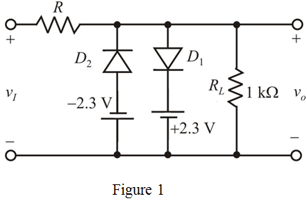
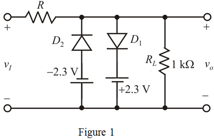
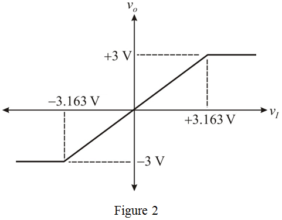

The diodes can limit on two sides for the limiting circuit, but the circuit should limit  on two sides, so if connect voltage sources in series for diodes respectively. Then, the two sides limits to.
on two sides, so if connect voltage sources in series for diodes respectively. Then, the two sides limits to.
The equivalent circuit is shown in Figure 1.

The diodes can limit on two sides for the limiting circuit, but the circuit should limit on two sides, so if connect voltage sources in series for diodes respectively. Then, the two sides limits to.
The equivalent circuit is shown in Figure 1.

Write the expression for voltage gain of the circuit.
Substitutefor and
and  for
for in the equation.
in the equation.
Thus, the minimum resistance value, is.
is.
Consider current through the conducting diode as
Determine the value of current through load resistor, when the diode is on.
is on.
Substitute  for
for in the equation.
in the equation.
Determine the value of current through resister , when the diode
, when the diode is on.
is on.
Substitute forand
forand  for
for in the equation.
in the equation.
Determine the value of minimum input voltage required to get limiting voltage of.
Substitute for
for , for
, for  and for
and for in the equation.
in the equation.
Thus, the threshold levels are,
When the input voltage is less than, then the diode  is ON and the output voltage is,
is ON and the output voltage is,
When the input voltage is greater than, then the diode  is ON and the output voltage is,
is ON and the output voltage is,
If the input voltage is betweenand, then both the diodes are in cut off, thus the output is follows input.
 versus
versus .
. 
Thus, the transfer characteristic curve versus
versus is shown in Figure 2.
is shown in Figure 2.